ЗАДАЮЩАЯ ШЕСТЕРНЯ > ПРОВЕРКА |
| 1. INSPECT COUNTER GEAR |
| 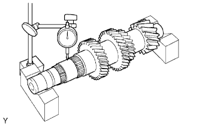 |
Using a dial indicator and 2 V-blocks, measure the shaft runout.
| 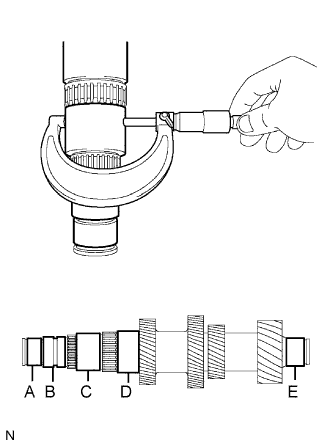 |
Using a micrometer, measure the journal diameter of each input shaft journal, at the specified positions.
| Item | Specified Condition |
| Journal A | 34.002 to 34.015 (1.3387 to 1.3392) |
| Journal B | 36.985 to 37.000 (1.4561 to 1.4567) |
| Journal C | 47.985 to 48.000 (1.8892 to 1.8898) |
| Journal D | 53.985 to 54.000 (2.1254 to 2.1260) |
| Journal E | 34.002 to 34.015 (1.3387 to 1.3392) |
| Item | Specified Condition |
| Journal A | 34.002 (1.3387) |
| Journal B | 36.985 (1.4561) |
| Journal C | 47.985 (1.8892) |
| Journal D | 53.985 (2.1254) |
| Journal E | 34.002 (1.3387) |
| 2. INSPECT COUNTER SHAFT REVERSE GEAR |
| 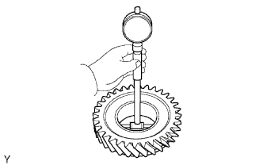 |
Using a cylinder gauge, measure the inside diameter of the reverse gear.
| 3. INSPECT COUNTER SHAFT 1ST SPEED GEAR |
| 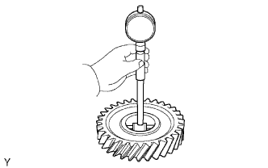 |
Using a cylinder gauge, measure the inside diameter of the 1st gear.
| 4. INSPECT COUNTER SHAFT 2ND SPEED GEAR |
| 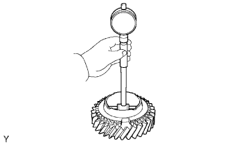 |
Using a cylinder gauge, measure the inside diameter of the 2nd gear.
| 5. INSPECT NO. 3 TRANSMISSION HUB SLEEVE |
| 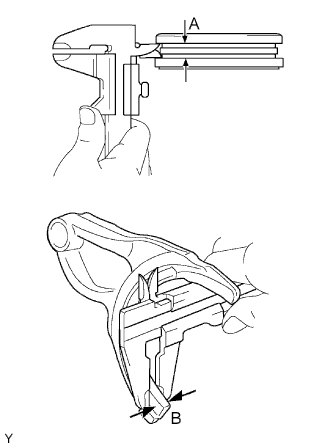 |
Using a vernier caliper, measure the width of the No. 3 transmission hub sleeve groove (A) and the thickness of the claw part of the gear shift fork No. 4 (B), and calculate the clearance.
| 6. INSPECT NO. 1 TRANSMISSION HUB SLEEVE |
| 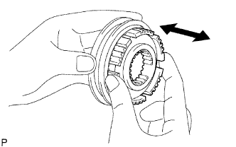 |
Check the sliding condition between the No. 1 transmission hub and No. 1 transmission hub sleeve.
Check that the splines of the No. 1 transmission hub sleeve are not worn.
| 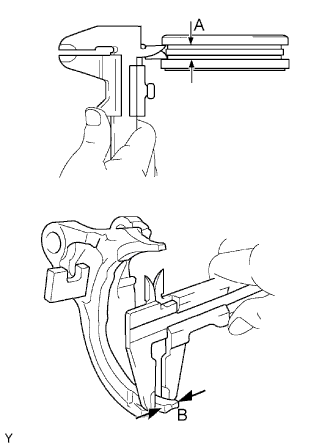 |
Using a vernier caliper, measure the width of the No. 1 transmission hub sleeve groove (A) and the thickness of the claw part of the No. 1 gear shift fork (B), and calculate the clearance.
| 7. INSPECT NO. 4 SYNCHRONIZER RING |
| 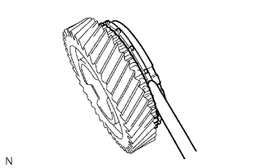 |
Using a feeler gauge, measure the clearance between the synchronizer ring and reverse gear.
Coat the reverse gear cone with gear oil.
| 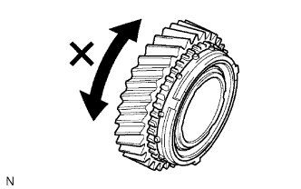 |
Check the braking effect of the synchronizer ring.
Turn the synchronizer ring in both directions while pushing it against the reverse gear cone. Check that the ring locks in both directions.
| 8. INSPECT NO. 1 SYNCHRONIZER RING SET (for 1st Gear) |
| 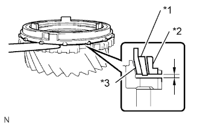 |
Using a feeler gauge, measure the clearance between the synchronizer ring and 1st gear.
| *1 | Middle |
| *2 | Outer |
| *3 | Inner |
Coat the 1st gear cone with gear oil.
| 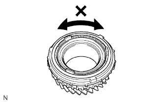 |
Check the braking effect of the synchronizer ring.
Turn the synchronizer ring in both directions while pushing it against the 1st gear cone. Check that the ring locks in both directions.
| 9. INSPECT NO. 1 SYNCHRONIZER RING SET (for 2nd Gear) |
Using a feeler gauge, measure the clearance between the synchronizer ring and 2nd gear.
| *1 | Middle |
| *2 | Outer |
| *3 | Inner |
Coat the 2nd gear cone with gear oil.
Check the braking effect of the synchronizer ring.
Turn the synchronizer ring in both directions while pushing it against the 2nd gear cone. Check that the ring locks in both directions.